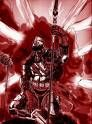

Joué par :
Jarel Joué par :
[ Information masquée ] Age : 21
Lieu de naisance : Stromgarde
Sexe : Homme
Race : Humain
Faction : Alliance
Formation : Guerrier
Niveau : 42
Guilde : Informations hrp : Donc,Jarel est mon personnage principal que je joue,la majorité du temps,il est très souvent a Hurlevent,très très peu dans d'autres endroits mis a part Elwynn.
Description : Jarel est né dans la cité de Stromgarde a l'époque ou elle tenait encore debout ... Sa mère est morte durant l'accouchement et son père avait déjà disparu depuis quelques temps,il fut alors élevé par son oncle,Danath Trollbane,qui,durant son temps libre l'initia a la maitrise des armes et aussi de la parole,mais hélas les hasards de la guerre firent que Jarel partit pour le sud,a Hurlevent et que Danath,plus tard,chosit de partir pour Draenor.
Quelques années après son arrivée a Hurlevent,Jarel décida qu'il devait devenir célèbre pour ses actes,il choisit alors,de s'engager dans la contreversée Garde Noire,qui luttait au Nord contre des attaques de réprouvés,puis plus tard,contre une épidémie de vampirisme dans Hurlevent ...
Septième Ère [1]
Lune de la Force
Décade du Panda
Décade du Gorille
Décade de l'Ours
Lune d'Agilité
Décade du Tigre
Décade du Singe
Décade du Faucon
Lune de l'Esprit [1]
Décade de la Chouette [1]
Une promotion innatendue
Cela faisait quelques temps que la Garde Noire avait sombrée ... L'assassinat de l'inquisiteur Threepwood ... L'engagement de la majorité des anciens au service d'un seigneur trop autoritaire ... Jarel lui avait choisit une autre voie,celle de la Garde d'Hurlevent,il avait été recruté presque en même temps que Fréderick,un paladin débutant,et il s'aidaient mutuellement,au fur et a mesure,ils commencèrent a monter en grade,mais un jour il rencontra,dans la forêt d'Elwynn,un homme,barbu,a la carrure militaire,répondant au nom de Bernard.Leur discussion tourna essentielement autour de la reformation d'une milice civile en Elwynn,dont Jarel pourrait être le Capitaine.Dès son retour a Hurlevent,Jarel en parla a ses supérieurs et après avoir rempli les formalitées,il devint le premier Capitaine de la seconde Milice d'elwynn